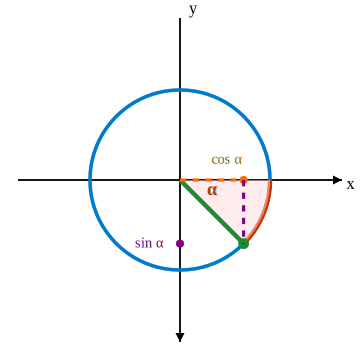

Синус и косинус произвольного угла
Для произвольного угла \( \alpha \) синус и косинус определяются как координаты точки на единичной окружности:
\[ \cos \alpha = x, \quad \sin \alpha = y \]
где точка получена поворотом радиуса на угол \( \alpha \) от положительного направления оси Ox.
Рис. 1. Координаты точки на окружности при угле \( \alpha \)
Знаки функций в квадрантах
- I четверть: \( \sin \alpha > 0, \quad \cos \alpha > 0 \)
- II четверть: \( \sin \alpha > 0, \quad \cos \alpha < 0 \)
- III четверть: \( \sin \alpha < 0, \quad \cos \alpha < 0 \)
- IV четверть: \( \sin \alpha < 0, \quad \cos \alpha > 0 \)
Периодичность
\[ \sin(\alpha + 2\pi) = \sin \alpha, \quad \cos(\alpha + 2\pi) = \cos \alpha \]
Чётность и нечётность
\[ \cos(-\alpha) = \cos \alpha \quad \text{(чётная функция)} \]
\[ \sin(-\alpha) = -\sin \alpha \quad \text{(нечётная функция)} \]